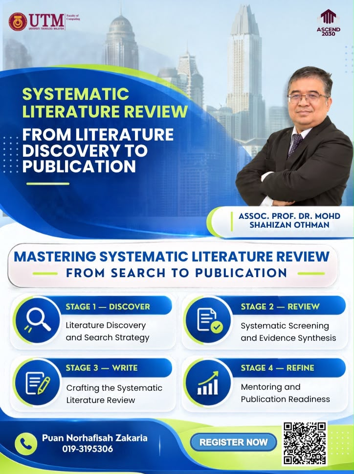

2026 Progressive SLR Workshop
Systematic Literature Review from Literature Discovery to Publication
A four-stage, hands-on learning journey that guides participants from defining a review and discovering literature to evidence synthesis, manuscript development, refinement and publication readiness.

Before you start
Come prepared to build your own SLR
Learning journey
Methodology first. Tools where they add value.
The programme is organised around the systematic review process rather than around individual AI tools.
DISCOVER→DESIGN→REVIEW→SYNTHESISE→WRITE→REFINE→PUBLISH
Discover
Literature discovery, research questions, keywords, databases and reproducible search strategy.
Explore Stage 1 →Review
Protocol, deduplication, screening, PRISMA, quality assessment and extraction.
Explore Stage 2 →Write
Evidence synthesis, research gaps, tables, figures and manuscript drafting.
Explore Stage 3 →Refine
Manuscript review, journal matching, reporting compliance and submission readiness.
Explore Stage 4 →COHORT 1 · BEFORE THE WORKSHOP
Entry Survey
Registered Cohort 1 participants are invited to complete a short entry survey about their research background, current SLR experience and learning needs. Your responses will help guide the workshop activities.
28 questionsAbout 10–15 minutesMatric No. / Staff No. verificationSave Draft available
Complete the survey once. You may save a draft and return later, but final submissions cannot be edited.
Open Cohort 1 Entry Survey →Programme deliverable
A substantially completed Systematic Literature Review manuscript prepared towards journal submission.